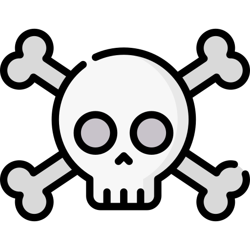
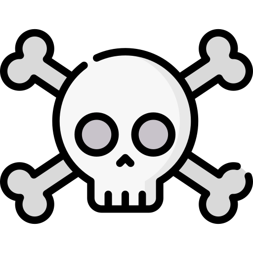

Joan Miró
 


Nascita:
20 Aprile 1893, Barcellona, Spagna
Morte:
25 Dicembre 1983, Palma di Maiorca, Spagna
Corrente:
Surrealismo


Opere più famose: Il carnevale di Arlecchino 1925; I due amici 1969
Curiosità: Sin da giovanissimo era appassionato di pittura ma, su consiglio del padre, intraprese studi economici. Iniziò a lavorare come contabile in una drogheria ma, in seguito a un esaurimento nervoso, decise di seguire la sua vocazione, dedicandosi a tempo pieno all’arte.
Citazione: “Il surrealismo mi ha permesso di superare di gran lunga la ricerca plastica, mi ha guidato nel cuore della poesia, nel cuore della gioia: gioia di scoprire quel che faccio dopo averlo fatto, di sentire che il senso e il titolo del quadro si gonfiano dentro di me a mano a mano che lo dipingo.”